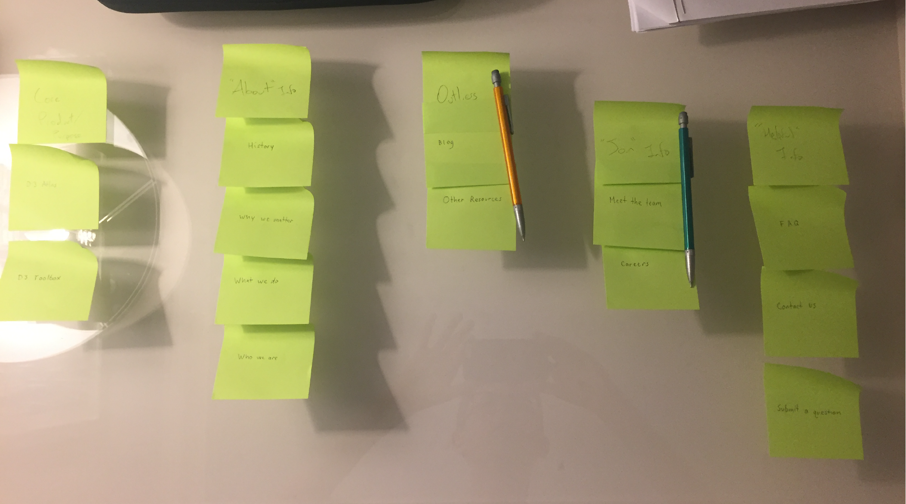
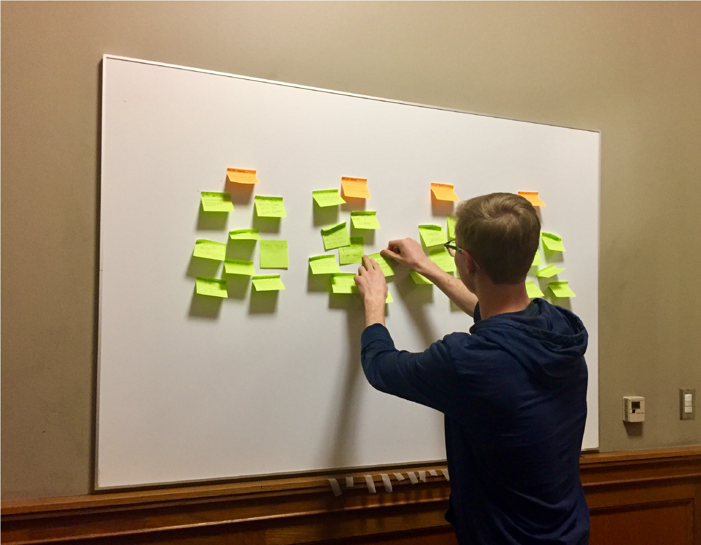
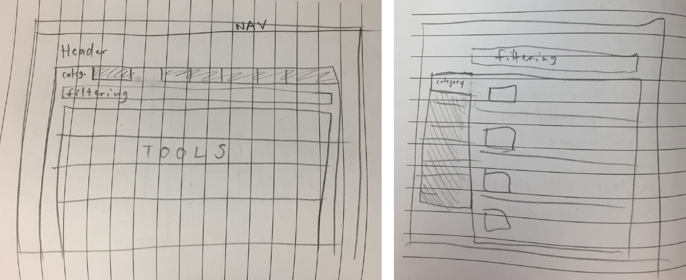
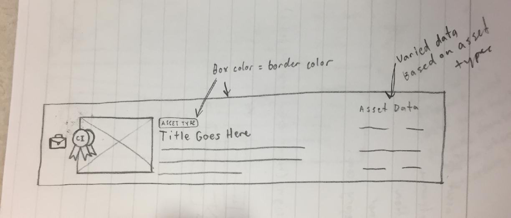
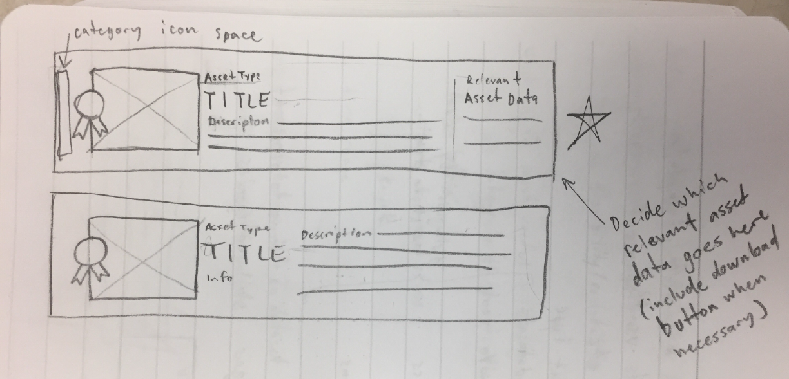
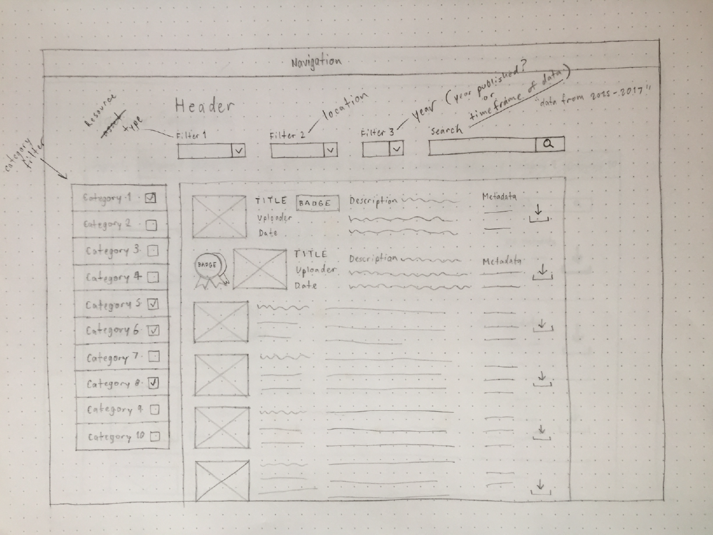
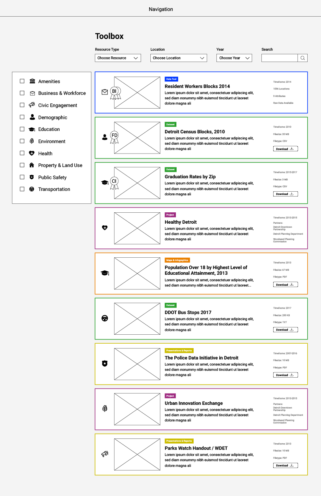

Data Driven Detroit
Work in progress
Project Type: User Experience Design, User Experience Research
Date: January 2018 - April 2018
Role: User Experience Designer, User Experience Researcher
Work Setting: Team of 4 collaborating with other student teams and multiple professional clients
Goal: Provide community members in and around Detroit with a simple means of accessing, understanding, and using open data to empower informed decision making
The Project
Overview
My team, made up of four students from the University of Michigan School of Information, is working directly with Data Driven Detroit (D3) to redesign the D3 website - primarily the D3 Toolbox - to help users better understand the function and capabilities of the data and tools that are offered by D3. D3’s goal is to empower informed decision making in Detroit through the use of accurate, reliable, unbiased data. This redesign will help users make use of the available data and tools to better inform the decisions they make while developing areas, services, and products that help rebuild Detroit.
Detroit Data Utility
In addition to our work with D3, my team is working collaboratively teams from the Stephen M. Ross School of Business, the School of Social Work at the University of Michigan, and numerous faculty members from U of M to plan and design solutions for a city-wide data coalition in Detroit, currently titled, "Detroit Data Utility." This coalition will plan how open, accessible data is used to empower informed decision making in Detroit, helping Detroit become a “smart city.” Our work with D3 is used to guide our planning and design efforts with this initiative.
Research Phase
Competitive Analysis
While D3 looks at other organizations that do similar work to them as allies rather than competitors, we still wanted to get a better feel for what the field looks like in terms of digital product design.
Two direct competitors, Western Pennsylvania Regional Data Center and Shift Research Lab, were analyzed looking at general design choices around the navigation of their websites, the hero space on their sites, and the organization of assets on their sites (especially tools and data if available). Similarly, our analysis of indirect competitors included Netflix and Kaggle
| Western Pennsylvania Regional Data Center |
|
| Shift Research Lab |
|
| Netflix |
|
| Kaggle |
|
Later competitive analysis during the design phase is allowing us to hone in on specific design problems that we will are working with and look at how other sites, such as Amazon and Target, deal with these design problems.
Heuristic Evaluation
To begin research on the project, we ran three heuristic evaluations of the D3 sites, each following the guides laid out by Nielsen Norman Group’s “10 Usability Heuristics for User Interface Design”.
One on D3’s current site that the public can view online, one on D3’s new prototype site that is in development (we have agreed not to share this site aside from screenshots), and one on a D3’s Open Data Portal.
It is important to note that these ratings are subjective and we use usability tests and interviews to validate the severity of each of the issue we discovered.
| Current Site |
|
| Open Data Portal Site |
|
| Prototype Site |
|
User Testing
Our heuristic evaluations revealed numerous issues with the current and prototype sites, but since our severity ratings were subjective, we needed to conduct usability tests to validate our claims.
Though D3’s data primarily focuses on the Metro Detroit area and therefore would be most relevant to Detroit residents, we decided to conduct our usability tests with Ann Arbor residents due to convenience for recruiting and scheduling. This also allowed us to work out any unforeseen issues with our usability tests before visiting Detroit to talk with a more ideal user-base. We realize this convenience sampling may introduce bias.
While traveling to Detroit is still in planning, the trip would be beneficial to assess how potential users within the community interact with D3’s site.
Our team recruited participants for the three user groups, conducting five tests in total:
Urban Planners
- A faculty member of the Taubman College of Architecture and Urban Planning at the University of Michigan
Individuals that regularly work with data
- A senior at the University of Michigan studying information analytics
- A senior at the University of Michigan studying statistics and psychology
Individuals interested in community information but with little/no data experience
- A sophomore at the University of Michigan studying communications
- A senior at the University of Michigan studying English
Card Sorting
After usability testing, we conducted open card sorting with individuals using the content from D3’s Navigation Bar on their prototype. This allowed us to better understand how potential users understand and expect the navigation to function.
First participant created four categories:
- D3 Assets
- About
- User Interaction
- Miscellaneous
Second participant created four categories:
- Who We Are
- History
- Resources
- Outliers (Blog)
Third participant created five categories:
- Core Product/Purpose
- “About” Info
- “Join” Info
- “Helpful” Info
- Outliers (Blog, Other Resources)
Key Findings
1. Unclear Mission and Role
When asked what they believe D3 does, many users just read the mission statement on the home page on both the current site and the prototype site. When prompted about what the mission statement meant, we received varied, vague responses.
- 3 of 4 user testers had trouble accurately explaining D3's mission and role based on the provided information.
- Not originally noted in heuristic evaluations
2. Unseen Search and Filtering
On the current site’s Portfolio page, the search and filtering mechanism is not obvious. Many users were drawn to the colored containers for tools, projects, datasets, etc. and didn’t notice that it was possible to search for a particular resource. Therefore, when asked to find a particular resource, users spent a long time searching each container instead of simply searching for the tool.
- 2 of 4 user testers did not notice search and filtering mechanism
- User testing validated this issue, which we had originally noted in heuristic evaluations
3. Ambiguous Title for Projects
Under the “Our Work” button in the navigation bar of the prototype is a page called “D3 Atlas.” The label is not a descriptive name and is misleading. It navigates to a page dedicated to showcasing projects, but when users were asked to find projects D3 had done in the past, two of the users failed to find the page.
- 2 of 4 user testers commented or displayed trouble with the ambiguity of the title.
- Note: The title "D3 atlas was recently changed to "D3 Toolbox" on the D3 prototype site.
4. Required Hover to See Necessary Information
The Prototype’s Toolbox page does not have any labels for the tools. Therefore all of the users have to hover over each tool/project in order to learn about it and potentially find the one they were looking for.
- 4 of 4 user testers displayed the need to hover over multiple tool/project in order to see information about each asset and find whichever tool or project they were looking for.
- 2 of 4 user testers searched through each tool on the "Toolbox" page in order to find the tool that they were looking for. In both cases this process took over 50 seconds.
- This issue was originally noted in the heuristic evaluations, though we feel as though we should increase the initial severity we assigned to the issue from 4 to 5.
5. Excessive Hover Effects and Animations
On the prototype site, an overuse of hover effects and animations are used for interactions, complicating a user’s access to important information. The prevalence and intensity of the animations disorients the user and hinders their ability to find this information quickly.
- 2 of 4 user testers commented and/or displayed concern with the numerous hover effects and animations.
- According to an Urban Planner that we tested with, “the flash is a little unnecessary.”
Design Requirements
| Must Have |
|
| Should Have |
|
| Nice to Have |
|
Design Phase
Brainstorming
We began our design phase by listing and organizing ideas on how to address each of the four "Must Have" design requirements that we identified based on our research.
Sketching
From our brainstorming, we chose a few ideas that we would proceed with. So far we have focused on categorization and structure of D3’s toolbox, where public resources and data is available to inform decision making in the Detroit area.
We began our low fidelity prototype development with simple sketches of these ideas. We shared these sketches with potential users and noted any feedback we received, constantly revising these sketches until we reach designs that sufficiently satisfied our requirements.
  Wireframing
With these sketches and the feedback we received, we developed simple physical and digital wireframes to better display our design choices in context of D3’s website.
 Low Fidelity Paper Prototype
From our digital wireframe, we created a paper prototype that allowed potential users to interact with our design for D3’s toolbox. We have began user testing with this prototype and are currently in the process of analyzing feedback on the interface.
Next Steps
Visit Detroit
We are currently coordinating a trip with our counterparts from the School of Business and the School of Social Work in the coming weeks to test prototypes of our designs and run interviews with stakeholders and current/potential users of the D3 site.
With the findings we collect from Detroit, we plan to revise our personas and create user journeys in order to better assist our decision making in the design phase of this project.
Design the Journey from the Homepage to the Toolbox
With our toolbox design testing underway, we plan to soon develop high fidelity prototypes of our redesigned interface.
The next step from here is to connect the dots so that a user entering the site knows both how D3 and their open data can help them as well as how they can find and start using the data and tools to further their understanding of the city and communities of interest.
Check back often to see updates on this project